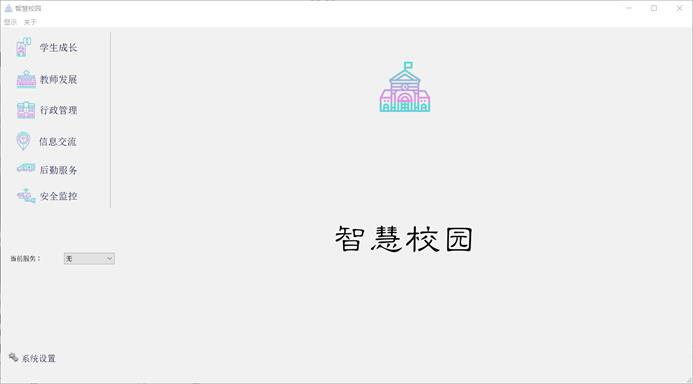
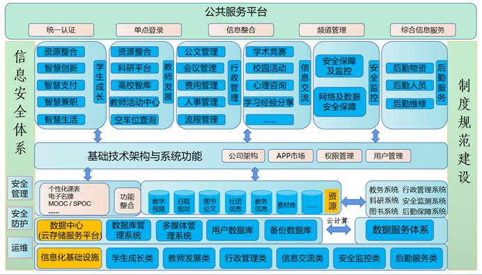
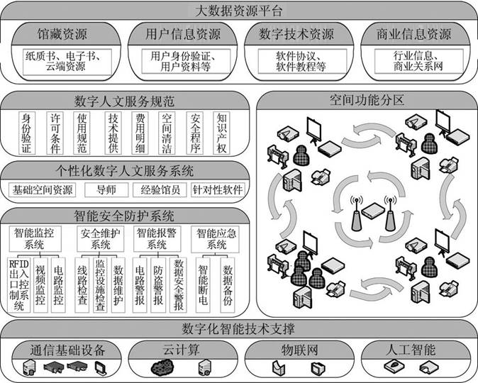
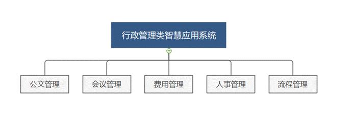
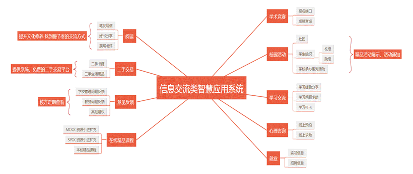
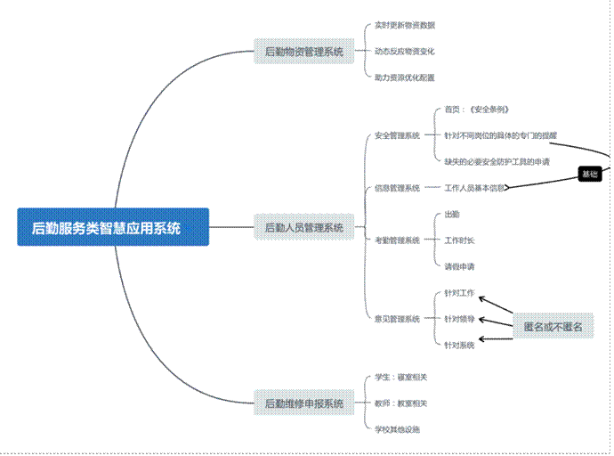
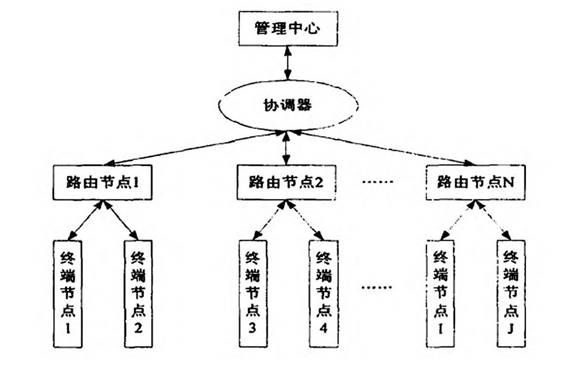

智慧校园一体化项目产品介绍
Authors: 陈禹臻 李璐雅
智慧校园是将校园已有网络当作基础，是在融合信息技术、整合信息技术应用的基础上，建立广泛感知信息终端的，具有网络化、智能化特色的校园。是物理空间和信息空间的有机衔接，使任何人、任何时间、任何地点都能便捷地获取资源和服务。针对校园环境，更具体来讲，智慧校园以广泛互联的网络接入、优质高效的信息资源和智慧便捷的应用服务为典型特点，有效拓展了数字校园的服务功能，成为未来校园信息化发展的重要趋势。
智慧校园一体化整合了数字校园的许多成果，分为六大模块：
学生成长类智慧应用系统、教师发展类智慧应用系统、行政管理类智慧应用系统、信息交流类智慧应用系统、安全监控类智慧应用系统、后勤服务类智慧应用系统.

图1 智慧校园应用界面

图2 智慧校园总体框架
学生成长类智慧应用系统
学生成长类智慧应用系统以学生的学习、生活为服务目标，旨在为学生的校园生活提供更多便利。
学习篇
（1）资源整合
平台将成绩查询、选课、评教、空教室查询、教师开设课程查询等功能进行集合，方便学生进行学习安排。
（2）智慧创新
- 个性化课表： 课表是每个学生都必须要用到的可视化课程展示，简单的记录将帮助学生更好地安排时间。多数学校原有课表只会显示校内已选课程且界面单一。个性化课表将根据学生学期课表与校内选修、课外课程、有关讲座等进行每天的自动变化且会显示时间安排是否冲突，并根据学生选课进行有关课程推荐。
- 智慧图书馆： 图书馆是学校教学和科研工作的重要组成部门,它应配合学校的教学和科研,向读者提供文献资料、情报信息,使读者获得知识，受到教育,将图书馆的职能作用发挥到最大。但目前较多高校存在不同校区间文献、书籍不流通现象。为更好地发挥高校图书馆的价值，本公司将在平台内录入智慧图书馆系统。根据网格化的知识结构模式，通过对已经收集好的信息资源做出相对应的处理。在该系统内，学生可以进行图书馆座位预约、图书查询，且可以通过该平台预约本校其他校区或本地其他高校及市图书馆、省图书馆的书籍文献，推动文献等资源的跨库流通。基于图书馆+物联网+云计算+智慧化设备的智慧图书馆让用户可以实现资源共享，追求资源利用的最大化。

图3 智慧图书馆技术图
生活篇
（1）智慧支付
- 费用缴纳： 当前各个高校对于学费、网费、住宿费、水电费的缴纳都通过多个网站或公众号进行，平台众多、密码设置规则不同以及支付的方式不同，对于学生日常缴纳费用造成极大的不便。而本公司在平台中将加入智慧缴纳费用一栏，使得该平台成为学生的“卡包”，作为第三方中介对接到支付宝、微信以及各大银行与学校各个支付端口。让学生通过一个平台便可以完成在校的所有费用缴纳项目。
- 奖金发放： 奖学金与助学金是对优秀学生的一种肯定和支持，但在奖金发放时难免也会出现学生所持有的银行卡与规定银行卡不符的状况。在此情况下，学生会都会选择再去所规定的银行再办一张银行卡，但在收到奖金后便将此卡搁置，造成了资源的浪费。而该平台在解决学生费用缴纳问题的同时也设立了奖金发放系统。且平台皆为实名制，与个人身份证和学生卡绑定，保障了奖金的资金流向。减少资源浪费的同时，便利了校方与学生。
（2）智慧兼职
- 线下店内兼职： 据统计，截至2019年，全国各类高等教育学生达到3833万人，其中蕴含着巨大的人力资源潜力。调查研究由80%的大学生都具有兼职意愿，但是能够最终寻找到合适兼职的不足50%；而很多商家也继续优质的低价劳动力以降低成本，但却没有合适途径来寻找。这就造成了岗位与人力供需不匹配、信息不对称等，造成了人力资源的极大浪费。而该平台则在商家和大学生之间建立中间平台，商家通过该平台发布所需要的短期和长期劳动力，并表明工作时间、要求、薪资等信息，学生通过学号进行身份认证在平台寻注册，根据自身条件和商家需求找兼职工作。在减少商家成本的同时也满足了大学生兼职的需要，平台也可以从中收取部分中介费用以进行平台的维护和运营，以达到三方共赢的局面。
- 顺风快递员： 随着教育事业的发展，各个院校不断扩招，大学生群体数量不断增加，校园经济的蓬勃发展也为经济总体平稳运行做出了贡献。校园经济是面向学生、依托校园而发展起来的一种区域性经济。而电商行业的不断扩张，高校大学生已然成为了网络购物的主力军。随之而来的是取快递排队时间长、快递点相距较远等问题，给同学取快递造成极大的不便。而该平台提供了代取快递兼职信息，以学生为主体，学生在平台注册可以发布代取快递需求并接收其他同学快递代取的订单。发布订单的同学通过支付少量的代取费用，寻找可以代取的顺风快递员。代取同学的举手之劳不仅解决了别的同学的需要，还可以从中赚取少量工资。且由于先期的注册人员身份限制，在该平台内的全部都是本校同学，减少了快递丢失、损坏的风险，也可以在意外出现后及时联系到本人进行赔偿协商，极大的提高了安全性。
- 校园工作兼职： 校园工作兼职是如办公室短期助理等，工作任务较为集中，工作时间较为零碎，需求呈现出及时性、专业性、零散性等特征。当前很多学校都是通过校内通知或微信群等平台来发布，这就会造成多数人员难以及时获得信息以及面向人员较为狭窄等问题。而通过该平台发布校园兼职信息，是面向校内全体同学的，能够在最短时间内找到擅长该工作的人员。提高了学校的工作效率，也为同学们开辟了一条新的兼职道路。
（3）智慧生活
- 校内车辆管理： 目前在高校内通行的车辆主要是学生的自行车、电动车等，但因高校人数众多、上课时间较为集中等原因也造成了车量乱停乱放、车辆丢失等一系列问题。而本平台则通过运用定位系统与物联网技术相结合，将学生的车辆进行二维码登记，使学生实时清楚自己的车辆定位，防止失窃。且划定规定的停车地点和停车数量，学生可通过平台查阅可停车的地点，如果违规停车则直接通过该平台的学生账户进行罚款。而对于常年没有登记或长时间占据停车位的车学校便可通过该平台获取车辆位置和信息进行集中清理整治。维护校园内车辆秩序，保障学生财产安全。
- 评价参考： 目前高校周围多聚集了餐厅、电影院等商业主体，以满足学生的日常放松娱乐需要。而琳琅满目的商家给学生带来了选择困难，便急需一个评价平台来借鉴。当前的美团、大众点评等一系列平台已出现该功能，但是评价人数较少、描述不具体等问题难以给其他人的选择给予过多的参考。而该平台以校内学生为主体，不定时进行对周围商家的菜品、环境、服务态度等方面进行测评，并随机给予评价者以红包奖励等，以激发评价者的积极性，并不断完善对周围商家的评价，来给予其他学生更多的借鉴。
- 二手交易： 当前我们很多是通过学校书店、二手平台来进行二手交易。通过书店交易造成了中间差价，致使价位过高等问题；通过二手平台会造成书籍等与学校规定不匹配、买卖双方身份不明确、质量难以保障等问题。当前市场上的app鱼龙混杂，用户身份不明确，易混入不法分子。而且在同学急需物品时难以立即解决。除此之外，通过租赁商店所租售的物品价格过高。我们则可以校园为载体，保障各方的身份明确，进行二手买卖、交换、租赁。各个同学可以将自己的需求或者闲置物品发到上面，同学之间可以二手买卖或者进行易物。还可以提供短期租赁等活动，让同学们的物品利用率提升的同时，增加拥有者的收入，降低租赁价格。
教师发展类智慧应用系统
教师发展类智慧应用系统以教师的工作、生活为服务目标，旨在为教师们的校园生活提供更多便利。
工作篇
（1）资源整合
平台将考试安排、成绩评定、云作业管理、班级对话、党务信息、教学进度与考勤等功能进行集合，同时增设了科研平台和高校智库建设平台，方便教师进行工作安排。
（2）智慧创新
- 科研平台： 科研平台为每个教师提供所研究课题的科研信息，帮助教师更好地安排时间和进度。不同于传统封闭式的科研方式，智慧校园一体化的科研平台可以最大限度地满足科研机构和人员之间交流与协作的需要，有效共享浩如烟海的信息。
- 高校智库建设： 智慧校园一体化APP引入丰富的科研资源，又能够在已有基础上增殖资源，不断累积和增加学科基础、科研设施、专业人员、社会互动等各方面资源的储备，从而不断提升政策研究的能力。有组织地开展科学研究，推动研究性大学的建设。当今社会，提倡以问题为导向开展科学研究，高校智库建设着重开展事关国家长远发展的基础理论研究，为科学决策提供坚实的理论支撑，国家符合国家发展需要，并且有利于确定高校自身的发展重点和前进方向。
生活篇
平台提供教师活动中心、空车位查询等功能，为教师的校内生活带来更便捷的体验。
（1）教师活动中心
教师活动中心是提供给教师们的网上预约平台，教师可以在该平台上预约集体或个人的文娱活动，例如小型聚会、健身、打球、游泳等等。与此同时，本平台将根据教师学期课表与课外教学课程、有关讲座等进行每天的自动变化且会显示时间安排是否冲突，帮助教师更好地安排工作和休息时间。
（2）空车位查询
车位是许多教师们上下班时常遇到的重要问题,为更好地服务本校教职工，本平台将在平台内录入导航系统。在该系统内，教师们可以进行车位预约、车位查询，推动车位资源的实时流通。基于GPS导航+物联网+云计算+智慧化设备的智慧校园一体化APP让用户可以实现空车位资源利用的最大化。
行政管理类智慧应用系统
学校行政管理，是指对学校行政系统内部的管理，包括行政人员和行政事项的管理。行政系统是高校教学科研的重要保障，建立一套沟通顺畅、执行高效的行政管理体系对于校园建设意义重大。传统校园主要依靠面对面沟通、公文往来传递消息，其沟通成本高，且效率低下，执行情况反馈不及时。随着管理事务的多样化、复杂化，相关弊端逐渐暴露：当今高校普遍拥有庞大的行政管理队伍，并实行科层制管理。在行政系统运作中，相关事项需要层层审批、多部门审批，办事拖沓；某些事项需要多部门配合，各个独立的体系缺乏正式的协调平台，部门领导口头交流易造成信息失真；为传达意见、凝聚共识，行政领导频繁开会，线下会议准备消耗了大量时间和资源。而通过建立行政管理类智慧应用系统有助于解决以上问题，通过完善的信息网络管理系统,可以加快管理信息的传递、简化管理工作,促进学校行政管理工作科学化与规范化,有利于提高行政管理工作的效率与质量。

图4 行政管理类智慧应用系统
建立集成多种功能的行政办公综合平台。平台将逐渐改造传统办公方式，加强各部门线上交流协作，在高校内实现无纸化办公。
- 公文管理
实现发文管理(新建公文)、公文流转(待签公文与已签公文)和收文管理全过程电子化。系统可选择公文保密层级，根据保密程度决定其公开范围，查阅公文需要特定身份验证，实现公文高效精准投递。推广电子签名和电子印章，并建立完善的用章制度和防伪处理，相关审批电子留痕，做到有迹可循。建立完善的文件归档与销毁系统，避免文件冗余。
- 会议管理
会议是实现行政管理的重要方式，肩负着传达、决策、指导等多项功能。根据实际需求，如相关人员工作地点分散、会议室排班紧张等，采用视频会议、电话会议的方式。线上创建会议室，发布会议通知以及会议议程。会议进行过程中，实现电子存档，人工智能捕捉合成会议记录，并生成会议回放，以供未能参加会议的人员以及事后有需要的人员观看。设置提高会议效率的辅助功能，如会议总时长控制、发言时长控制、会议进度提醒等。
- 费用管理
各行政部门创建虚拟办公室，以办公室为单位建立电子账户。内部财务流转通过电子账户进行，切实做到每一笔账目清晰透明，账目流转生成大数据，并内部公开，以备检查核验。行政部门负责人拥有收款、转账、提现等相关权限，根据部门性质，赋予不同权限，对于没有外部交易需要的部门，限制其提现功能。系统对资金流转情况实时监控，对于不合理交易及时制止。
- 人事管理
建立行政人员内部档案，档案包括基本个人信息、工作履历、奖惩情况等。将年度考核结果录入档案，做到信息实时更新，为人员任免、晋升、培训、奖励、惩戒、福利待遇提供信息支撑，并起到督促激励的作用。采集汇总面部、指纹信息，作为身份凭证，取代传统电子卡片，解决以往密码泄露、卡片盗刷等问题。
- 流程管理
通过办公平台实现决策、执行、反馈流程控制。以线上会议的方式进行决策，根据决策进行内部分工，分配任务。各部门线上实时通报执行情况，根据情况反馈进行动态调整。在任务完成后，进行结果信息收集，包括短期结果以及长期结果，将结果录入信息系统，作为优化流程、绩效考核的主要依据。
信息交流类智慧应用系统
信息交流类智慧应用系统以学生的学学术竞赛、校园活动、心理咨询预约、生活就业等多个领域为服务目标，旨在为通过平台实现各方面的便利。

图5 信息交流类智慧应用系统概览图
- 学术竞赛篇
平台将各种学术活动和竞赛活动的信息及时上传，并链接到相应报名端口或成绩查询页面，方便学生及时获取相关信息的同时又能够对自己的成绩情况进行了解。
- 校园活动篇
校园活动篇下分为社团、学生组织相关信息以及校园系列活动通知三大模块，实现校园活动通过互联网平台的及时有效传播，为学生们丰富多彩的校园活动提供便利。
- 社团： 该项目旨在通过平台实现社团展示交流、社团活动通知以及跨校社团联谊三大板块的功能，比起线下交流所耗费的大量时间和精力，智慧校园建设的这一板块为我们的社团建设甚至不同学校之间的社交活动提供了大量便利性条件。
- 学生组织相关信息： 该项目主要针对的社联和学生会两大组织，从校级到院级，所有相关信息和服务都可以通过该平台实现。
- 校园系列活动通知： 比起通过多个网站和多种不同的渠道去了解不同的校园活动，智慧校园网络平台旨在为学生们打造更为便捷的校园活动通知查询系统，将各网站的信息实现综合，为学生和教师创造更好的校园环境。
- 心理咨询预约篇
为了给学生提供更便利的医疗环境和医疗体系，该平台还将推出心理咨询预约功能。比起长时间的排队咨询问诊，线上预约会节省学生大部分时间。
- 学习经验分享篇
对于大部分学生来说，可能缺乏机会去接触到相对来说格外优秀的学长学姐亦或是在各个不同领域经验十足的“前辈们”。该项目旨在通过平台为大多数学生提供和大佬们深度接触了解的机会。由在某方面优秀的同学在论坛上分享自身的经验，大家可以针对自身情况进行提问。同时推出打卡活动，充分调动各方面的积极性。
- 就业篇
实习和就业也是让不少大学生头疼的原因之一。现阶段各种招聘软件众多，质量也参差不齐，所针对的目标群体也不尽相同。该项目旨在推出一个更加完整全面的招聘系统，只服务于特定高效的大学生群体，不论是实习信息还是招聘信息，都将一网打进，实现高效就业。
- 读书篇
如今身处网络时代的我们在读书方面也更难找到与自己志趣相投的笔友了，为了帮助同学们互相提升进步，该项目将为同学们搭建一个读书平台，通过好书分享以及撰写书评等方式寻找到自己在读书上的“有缘人”。
- 意见反馈篇
此处所提及的意见反馈所针对的对象不尽相同，主要分为针对学校管理及教务系统问题和针对本系统的评价两种。
就针对学校管理及教务系统问题而言，通过该平台学生可以将自己的相关建议和问题进行描述，会设置专门人员对于具体问题进行分析回答或将特定问题进行向上级汇报等。
就针对本系统的评价而言，适当的夸赞是系统运行的动力，善意的批评也是系统成长的机会。该项目将设置专门的咨询代理机构，针对相关问题进行及时的分析与改进，保证整个系统的正产运行。 - 二手交易篇
该项目将为学生们设置专门的二手交易平台，集中处理同学们的日常用品和书籍等可以被二次利用的产品。不仅能够实现产品的循环利用，也能够为学生们的日常生活减少负担。
- MOOC SPOC建设篇
MOOC/SPOC是解决实体课堂系列矛盾、提高教育教学质量的重要手段。平台鼓励所有教师建设制作各具特色的在线开放课程，并为教师制作高水平在线开放课程创造条件。教师应按照规范建设并开放在线课程。此外，从教学设计、教学资源建设、教学资源组织、教学实施、课程团队及知识产权等方面对内容作出具体的规定。
后勤服务类智慧应用系统
后勤服务类智慧应用系统旨在为后勤管理提供便利的条件，其分为三个子系统，分别为后勤物资管理系统、后勤人员管理系统和后勤维修申报系统。
（1）后勤物资管理系统
此系统主要由后勤工作人员操作，相关工作人员需要将后勤物资仔细清点后登记在系统，然后每隔一段合理的时间更新一次数据，这样，系统就会以可视化地形式动态地呈现出物资变化情况。这一方面有利于监督物资使用、防止滥用资源，而另一方面则有利于优化资源配置，使物资用在关键之处。
（2）后勤人员管理系统
此系统主要用于对后勤人员的管理，其共分为四个子系统，分别为安全管理系统、信息管理系统、考勤管理系统和意见管理系统。

图6 后勤服务类智慧应用系统示意图
- 安全管理系统
该系统会在首页呈现《安全工作条例》，另外，在使用者工作前，系统还会根据使用者的工作岗位而进行具体的专门化提醒。如果使用者发现存在相关必要安全防护工具缺失的情况，也可通过此系统进行反馈。
- 信息管理
该系统可用于对后勤工作人员的信息管理，后勤工作人员需要将自己的基本信息填写在系统，并实现每半年一更新。这一方面有利于安全管理系统根据后勤人员的信息进行具体的专门化提醒，另一方也有利于管理人员对部门的工作人员情况进行整体的把握。
- 考勤管理系统
它与工作人员刷脸系统实现对接，可以实现对工作人员的工作出勤情况和工作时长进行统计。此外，如果遇到特殊情况，如疫情爆发等，管理人员也可通过此系统设置健康打卡等针对特殊事件的专门应对性程序。另外，工作人员因事请假，也可通过此系统提交申请信息。
- 意见管理系统
主要为收集意见所用，这种意见既可以是针对工作中某些情况的探讨，也可以是对相关领导的批评，还可以是对本系统改进的意见。使用者在提交意见时可以选择匿名或不匿名的形式。
（3）后勤维修申报系统
此系统主要用于学生或教师对寝室、教室或校园内相关工具、设施的维修申请。在申请时，无需考虑应该向哪一个具体的部门提交，应该进入哪个网站，只要在本系统内直接提交即可。
安全监控类智慧应用系统
安全监控类智慧应用系统主要功能在于保护老师同学的权益及人身安全，同时维护网络环境安全、维持各类数据稳定。
1. 安全保障及监控
在校园内部存在火灾等安全隐患, 直接对学生的个人安全造成威胁。配备安全监督系统可以直接对隐患进行监控, 进而对事故进行预测和预报, 大大的减少校园内的人员伤亡和财产损失。智慧校园安全监控系统集合了物联网技术、云计算及智能化设备等, 能够更加合理地为校园安全提供管理和服务。Zigbee技术具有传输距离远、复杂程度低、功耗小和传输精度高的优点, 可以保证人与物、物与物之间的高质量无线数据传输, 并可以很好地解决物联网中无线传感器各节点间的网络连接。因此, Zigbee技术作为核心技术, 在建设智慧校园安全系统中发挥着越来越重要的作用。

图7 智慧校园安全系统设计结构图
2. 网络及数据安全保障
通过安全可靠的顶层设计，最大限度发挥数据资源的作用，有效避免过于分散、不够规范带来的不可控风险。
优化网络结构，分区进行安全保护。根据区域不同实现分区的安全防护策略，合理的网络区域划分和精细化的网络安全规划，能够对于内部攻击、跳板攻击、无线网络入侵等实现防护；能够锁定安全事件影响范围，降低损失；能够通过精细化分层防御，降低重要资产失陷概率。
从计算机、网络安全等专业筛选合适人员，并提供符合市场行情的待遇标准吸引、留住人才，逐步培养锻造一批具有专业素养的运维人才队伍。
版权声明
©2020-智慧校园科技有限公司版权所有